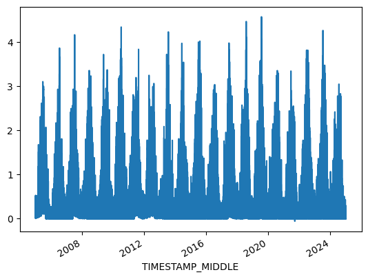
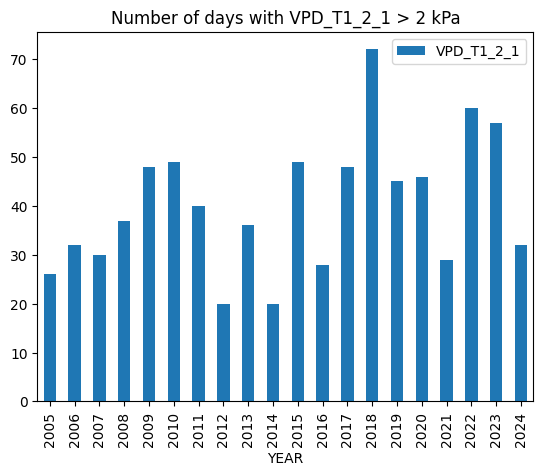
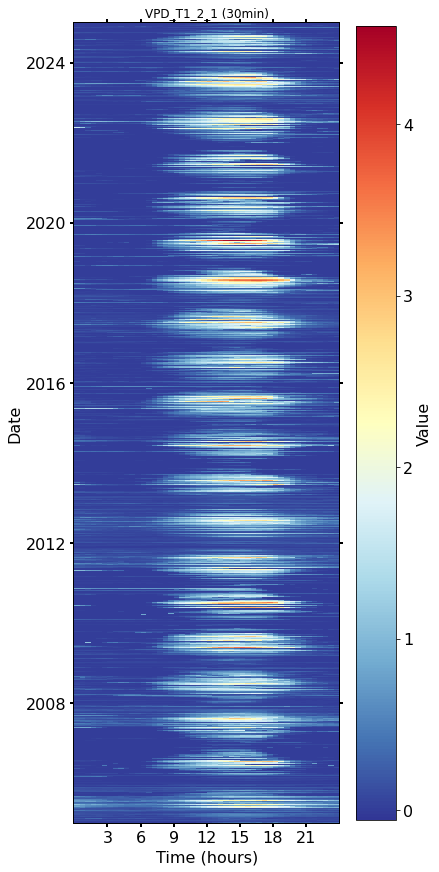
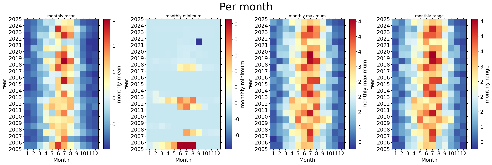
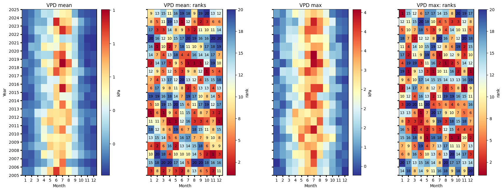
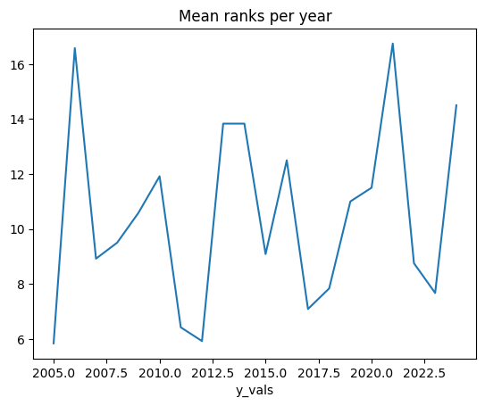
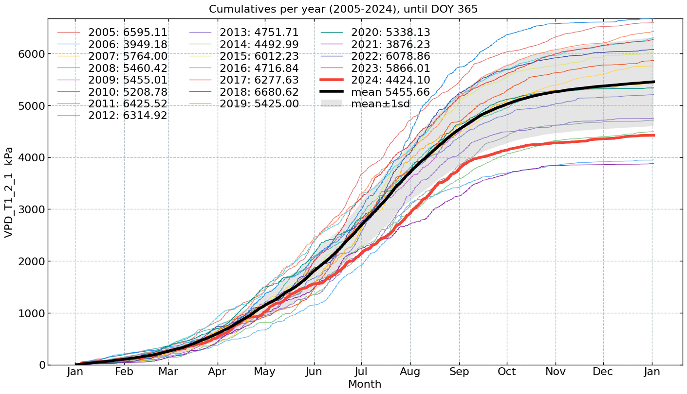
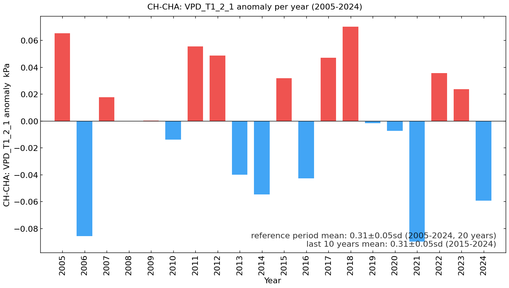

Meteo: Air temperature (TA) (2005-2024)#
Author: Lukas Hörtnagl (holukas@ethz.ch)
Variable#
varname = 'VPD_T1_2_1'
var = "VPD" # Name shown in plots
units = "kPa"
Imports#
import importlib.metadata
import warnings
from datetime import datetime
from pathlib import Path
import pandas as pd
import matplotlib.pyplot as plt
import matplotlib.gridspec as gridspec
import diive as dv
from diive.core.io.files import save_parquet, load_parquet
from diive.core.plotting.cumulative import CumulativeYear
from diive.core.plotting.bar import LongtermAnomaliesYear
warnings.filterwarnings(action='ignore', category=FutureWarning)
warnings.filterwarnings(action='ignore', category=UserWarning)
version_diive = importlib.metadata.version("diive")
print(f"diive version: v{version_diive}")
diive version: v0.87.0
Load data#
SOURCEDIR = r"../80_FINALIZE"
FILENAME = r"81.1_FLUXES_M15_MGMT_L4.2_NEE_GPP_RECO_LE_H_FN2O_FCH4.parquet"
FILEPATH = Path(SOURCEDIR) / FILENAME
df = load_parquet(filepath=FILEPATH)
df
Loaded .parquet file ..\80_FINALIZE\81.1_FLUXES_M15_MGMT_L4.2_NEE_GPP_RECO_LE_H_FN2O_FCH4.parquet (1.553 seconds).
--> Detected time resolution of <30 * Minutes> / 30min
| .PREC_RAIN_TOT_GF1_0.5_1_MEAN3H-12 | .PREC_RAIN_TOT_GF1_0.5_1_MEAN3H-18 | .PREC_RAIN_TOT_GF1_0.5_1_MEAN3H-24 | .PREC_RAIN_TOT_GF1_0.5_1_MEAN3H-6 | .SWC_GF1_0.15_1_gfXG_MEAN3H-12 | .SWC_GF1_0.15_1_gfXG_MEAN3H-18 | .SWC_GF1_0.15_1_gfXG_MEAN3H-24 | .SWC_GF1_0.15_1_gfXG_MEAN3H-6 | .TS_GF1_0.04_1_gfXG_MEAN3H-12 | .TS_GF1_0.04_1_gfXG_MEAN3H-18 | .TS_GF1_0.04_1_gfXG_MEAN3H-24 | .TS_GF1_0.04_1_gfXG_MEAN3H-6 | .TS_GF1_0.15_1_gfXG_MEAN3H-12 | .TS_GF1_0.15_1_gfXG_MEAN3H-18 | .TS_GF1_0.15_1_gfXG_MEAN3H-24 | ... | GPP_NT_CUT_50_gfRF | RECO_DT_CUT_50_gfRF | GPP_DT_CUT_50_gfRF | RECO_DT_CUT_50_gfRF_SD | GPP_DT_CUT_50_gfRF_SD | G_GF1_0.03_1 | G_GF1_0.03_2 | G_GF1_0.05_1 | G_GF1_0.05_2 | G_GF4_0.02_1 | G_GF5_0.02_1 | LW_OUT_T1_2_1 | NETRAD_T1_2_1 | PPFD_OUT_T1_2_2 | SW_OUT_T1_2_1 | |
|---|---|---|---|---|---|---|---|---|---|---|---|---|---|---|---|---|---|---|---|---|---|---|---|---|---|---|---|---|---|---|---|
| TIMESTAMP_MIDDLE | |||||||||||||||||||||||||||||||
| 2005-01-01 00:15:00 | NaN | NaN | NaN | NaN | NaN | NaN | NaN | NaN | NaN | NaN | NaN | NaN | NaN | NaN | NaN | ... | 0.918553 | 0.093071 | 0.0 | 0.080016 | 0.0 | NaN | NaN | NaN | NaN | NaN | NaN | NaN | NaN | NaN | NaN |
| 2005-01-01 00:45:00 | NaN | NaN | NaN | NaN | NaN | NaN | NaN | NaN | NaN | NaN | NaN | NaN | NaN | NaN | NaN | ... | 0.917972 | 0.092682 | 0.0 | 0.079688 | 0.0 | NaN | NaN | NaN | NaN | NaN | NaN | NaN | NaN | NaN | NaN |
| 2005-01-01 01:15:00 | NaN | NaN | NaN | NaN | NaN | NaN | NaN | NaN | NaN | NaN | NaN | NaN | NaN | NaN | NaN | ... | 0.163001 | 0.093071 | 0.0 | 0.080016 | 0.0 | NaN | NaN | NaN | NaN | NaN | NaN | NaN | NaN | NaN | NaN |
| 2005-01-01 01:45:00 | NaN | NaN | NaN | NaN | NaN | NaN | NaN | NaN | NaN | NaN | NaN | NaN | NaN | NaN | NaN | ... | 0.190890 | 0.093071 | 0.0 | 0.080016 | 0.0 | NaN | NaN | NaN | NaN | NaN | NaN | NaN | NaN | NaN | NaN |
| 2005-01-01 02:15:00 | NaN | NaN | NaN | NaN | NaN | NaN | NaN | NaN | NaN | NaN | NaN | NaN | NaN | NaN | NaN | ... | 0.167042 | 0.092295 | 0.0 | 0.079361 | 0.0 | NaN | NaN | NaN | NaN | NaN | NaN | NaN | NaN | NaN | NaN |
| ... | ... | ... | ... | ... | ... | ... | ... | ... | ... | ... | ... | ... | ... | ... | ... | ... | ... | ... | ... | ... | ... | ... | ... | ... | ... | ... | ... | ... | ... | ... | ... |
| 2024-12-31 21:45:00 | 0.0 | 0.0 | 0.0 | 0.0 | 52.229004 | 52.226300 | 52.226689 | 52.216796 | 3.458828 | 3.150402 | 3.115260 | 3.660897 | 4.335667 | 4.347764 | 4.385967 | ... | -0.334996 | 1.091028 | 0.0 | 0.265808 | 0.0 | NaN | NaN | -9.097370 | -7.880106 | NaN | NaN | 311.167160 | -5.883538 | 0.0 | 0.0 |
| 2024-12-31 22:15:00 | 0.0 | 0.0 | 0.0 | 0.0 | 52.227858 | 52.227986 | 52.224528 | 52.214211 | 3.522570 | 3.187638 | 3.103440 | 3.643396 | 4.338551 | 4.342880 | 4.379524 | ... | -0.310533 | 1.078751 | 0.0 | 0.264327 | 0.0 | NaN | NaN | -9.561669 | -8.172388 | NaN | NaN | 310.079817 | -6.269816 | 0.0 | 0.0 |
| 2024-12-31 22:45:00 | 0.0 | 0.0 | 0.0 | 0.0 | 52.226640 | 52.229837 | 52.222456 | 52.209876 | 3.578745 | 3.230037 | 3.095339 | 3.624025 | 4.343767 | 4.339440 | 4.372636 | ... | -0.225651 | 1.079759 | 0.0 | 0.264447 | 0.0 | NaN | NaN | -10.138718 | -8.527732 | NaN | NaN | 309.604987 | -6.934394 | 0.0 | 0.0 |
| 2024-12-31 23:15:00 | 0.0 | 0.0 | 0.0 | 0.0 | 52.224375 | 52.231151 | 52.221324 | 52.238293 | 3.624160 | 3.278488 | 3.093806 | 3.601135 | 4.350872 | 4.336333 | 4.366082 | ... | -0.558285 | 1.062164 | 0.0 | 0.262373 | 0.0 | NaN | NaN | -10.649611 | -8.871628 | NaN | NaN | 308.812117 | -5.696729 | 0.0 | 0.0 |
| 2024-12-31 23:45:00 | 0.0 | 0.0 | 0.0 | 0.0 | 52.222007 | 52.230632 | 52.222701 | 52.273511 | 3.656167 | 3.331678 | 3.103003 | 3.579020 | 4.360311 | 4.334225 | 4.359530 | ... | -0.317543 | 1.047483 | 0.0 | 0.260688 | 0.0 | NaN | NaN | -10.944774 | -9.138224 | NaN | NaN | 307.372117 | -8.102484 | 0.0 | 0.0 |
350640 rows × 812 columns
series = df[varname].copy()
series.plot(x_compat=True);
series
TIMESTAMP_MIDDLE
2005-01-01 00:15:00 0.099893
2005-01-01 00:45:00 0.097606
2005-01-01 01:15:00 0.091683
2005-01-01 01:45:00 0.071157
2005-01-01 02:15:00 0.058333
...
2024-12-31 21:45:00 0.000011
2024-12-31 22:15:00 0.000011
2024-12-31 22:45:00 0.000011
2024-12-31 23:15:00 0.000010
2024-12-31 23:45:00 0.000010
Freq: 30min, Name: VPD_T1_2_1, Length: 350640, dtype: float64

xlabel = f"{var} ({units})"
xlim = [series.min(), series.max()]
Stats#
Overall mean#
_yearly_avg = series.resample('YE').mean()
_overall_mean = _yearly_avg.mean()
_overall_sd = _yearly_avg.std()
print(f"Overall mean: {_overall_mean} +/- {_overall_sd}")
Overall mean: 0.31121955791661643 +/- 0.04902864837566863
Yearly means#
ym = series.resample('YE').mean()
ym
TIMESTAMP_MIDDLE
2005-12-31 0.376433
2006-12-31 0.225410
2007-12-31 0.328995
2008-12-31 0.310836
2009-12-31 0.311359
2010-12-31 0.297305
2011-12-31 0.366753
2012-12-31 0.359951
2013-12-31 0.271216
2014-12-31 0.256449
2015-12-31 0.343164
2016-12-31 0.268533
2017-12-31 0.358312
2018-12-31 0.381314
2019-12-31 0.309646
2020-12-31 0.303856
2021-12-31 0.221246
2022-12-31 0.346967
2023-12-31 0.334818
2024-12-31 0.251827
Freq: YE-DEC, Name: VPD_T1_2_1, dtype: float64
ym.sort_values(ascending=False)
TIMESTAMP_MIDDLE
2018-12-31 0.381314
2005-12-31 0.376433
2011-12-31 0.366753
2012-12-31 0.359951
2017-12-31 0.358312
2022-12-31 0.346967
2015-12-31 0.343164
2023-12-31 0.334818
2007-12-31 0.328995
2009-12-31 0.311359
2008-12-31 0.310836
2019-12-31 0.309646
2020-12-31 0.303856
2010-12-31 0.297305
2013-12-31 0.271216
2016-12-31 0.268533
2014-12-31 0.256449
2024-12-31 0.251827
2006-12-31 0.225410
2021-12-31 0.221246
Name: VPD_T1_2_1, dtype: float64
Monthly averages#
seriesdf = pd.DataFrame(series)
seriesdf['MONTH'] = seriesdf.index.month
seriesdf['YEAR'] = seriesdf.index.year
monthly_avg = seriesdf.groupby(['YEAR', 'MONTH'])[varname].mean().unstack()
monthly_avg
| MONTH | 1 | 2 | 3 | 4 | 5 | 6 | 7 | 8 | 9 | 10 | 11 | 12 |
|---|---|---|---|---|---|---|---|---|---|---|---|---|
| YEAR | ||||||||||||
| 2005 | 0.133255 | 0.125461 | 0.320798 | 0.435624 | 0.631945 | 0.892239 | 0.703919 | 0.504649 | 0.379947 | 0.193942 | 0.133325 | 0.048627 |
| 2006 | 0.042295 | 0.079210 | 0.150229 | 0.200371 | 0.318859 | 0.548187 | 0.802910 | 0.202061 | 0.182587 | 0.095968 | 0.047289 | 0.023285 |
| 2007 | 0.074036 | 0.069035 | 0.159711 | 0.538353 | 0.442551 | 0.609129 | 0.679132 | 0.486520 | 0.387438 | 0.240121 | 0.143102 | 0.105334 |
| 2008 | 0.101163 | 0.166638 | 0.268867 | 0.270890 | 0.640051 | 0.579719 | 0.624814 | 0.467921 | 0.274886 | 0.190829 | 0.078831 | 0.054863 |
| 2009 | 0.054268 | 0.089716 | 0.207986 | 0.475443 | 0.553480 | 0.530131 | 0.565989 | 0.602001 | 0.351871 | 0.161345 | 0.073599 | 0.055018 |
| 2010 | 0.034755 | 0.114424 | 0.250507 | 0.450694 | 0.309132 | 0.641680 | 0.775310 | 0.427092 | 0.296411 | 0.141553 | 0.086047 | 0.031565 |
| 2011 | 0.074014 | 0.114899 | 0.251863 | 0.581882 | 0.666643 | 0.590370 | 0.568899 | 0.682791 | 0.413194 | 0.205884 | 0.090626 | 0.142344 |
| 2012 | 0.143005 | 0.136775 | 0.382794 | 0.406973 | 0.603079 | 0.595387 | 0.611613 | 0.677814 | 0.332750 | 0.174978 | 0.127317 | 0.113257 |
| 2013 | 0.094633 | 0.118700 | 0.151919 | 0.296454 | 0.270358 | 0.545255 | 0.791319 | 0.515140 | 0.281154 | 0.089021 | 0.066108 | 0.023130 |
| 2014 | 0.027523 | 0.072557 | 0.203056 | 0.259976 | 0.371139 | 0.634490 | 0.447117 | 0.435652 | 0.328777 | 0.173127 | 0.051202 | 0.062999 |
| 2015 | 0.087011 | 0.080146 | 0.237306 | 0.421110 | 0.411199 | 0.630129 | 0.951911 | 0.668726 | 0.309405 | 0.137561 | 0.119234 | 0.042231 |
| 2016 | 0.085863 | 0.143620 | 0.210320 | 0.261039 | 0.408584 | 0.398482 | 0.625289 | 0.506644 | 0.396226 | 0.111058 | 0.051096 | 0.017171 |
| 2017 | 0.063720 | 0.120993 | 0.276426 | 0.338306 | 0.588850 | 0.842018 | 0.701453 | 0.599454 | 0.311367 | 0.252083 | 0.109643 | 0.077889 |
| 2018 | 0.137392 | 0.107644 | 0.165561 | 0.549344 | 0.466748 | 0.671946 | 1.003826 | 0.806515 | 0.436501 | 0.138281 | 0.021613 | 0.048886 |
| 2019 | 0.046392 | 0.133999 | 0.290680 | 0.316956 | 0.312127 | 0.762132 | 0.866354 | 0.456032 | 0.309308 | 0.114732 | 0.041034 | 0.055166 |
| 2020 | 0.038153 | 0.238026 | 0.222998 | 0.550285 | 0.479921 | 0.454533 | 0.654878 | 0.533983 | 0.330215 | 0.098995 | 0.033549 | 0.011433 |
| 2021 | 0.026035 | 0.082336 | 0.215003 | 0.379660 | 0.336810 | 0.511504 | 0.321846 | 0.359091 | 0.292334 | 0.100865 | 0.015050 | 0.011092 |
| 2022 | 0.037497 | 0.151235 | 0.319133 | 0.306950 | 0.470408 | 0.627205 | 0.910720 | 0.748110 | 0.311619 | 0.149694 | 0.072762 | 0.037093 |
| 2023 | 0.074762 | 0.137025 | 0.220513 | 0.216325 | 0.383360 | 0.916441 | 0.648015 | 0.614304 | 0.419083 | 0.220624 | 0.100025 | 0.058283 |
| 2024 | 0.074640 | 0.111231 | 0.206013 | 0.344785 | 0.330871 | 0.445858 | 0.536684 | 0.562334 | 0.223922 | 0.080089 | 0.054793 | 0.043635 |
Number of days below …#
# plotdf = df[[varname]].copy()
# plotdf = plotdf.resample('D').min()
# belowzero = plotdf.loc[plotdf[varname] < 0].copy()
# belowzero = belowzero.groupby(belowzero.index.year).count()
# belowzero["YEAR"] = belowzero.index
# belowzero
# belowzero.plot.bar(x="YEAR", y=varname, title=f"Number of days with {varname} < 0°");
# display(belowzero)
# print(f"Average per year: {belowzero[varname].mean()} +/- {belowzero[varname].std():.2f} SD")
Number of days above …#
plotdf = df[[varname]].copy()
plotdf = plotdf.resample('D').max()
above = plotdf.loc[plotdf[varname] > 2].copy()
above = above.groupby(above.index.year).count()
above["YEAR"] = above.index
above.plot.bar(x="YEAR", y=varname, title=f"Number of days with {varname} > 2 {units}");
display(above)
print(f"Average per year: {above[varname].mean()} +/- {above[varname].std():.2f} SD")
| VPD_T1_2_1 | YEAR | |
|---|---|---|
| TIMESTAMP_MIDDLE | ||
| 2005 | 26 | 2005 |
| 2006 | 32 | 2006 |
| 2007 | 30 | 2007 |
| 2008 | 37 | 2008 |
| 2009 | 48 | 2009 |
| 2010 | 49 | 2010 |
| 2011 | 40 | 2011 |
| 2012 | 20 | 2012 |
| 2013 | 36 | 2013 |
| 2014 | 20 | 2014 |
| 2015 | 49 | 2015 |
| 2016 | 28 | 2016 |
| 2017 | 48 | 2017 |
| 2018 | 72 | 2018 |
| 2019 | 45 | 2019 |
| 2020 | 46 | 2020 |
| 2021 | 29 | 2021 |
| 2022 | 60 | 2022 |
| 2023 | 57 | 2023 |
| 2024 | 32 | 2024 |
Average per year: 40.2 +/- 13.72 SD

Heatmap plots#
Half-hourly#
fig, axs = plt.subplots(ncols=1, figsize=(6, 12), dpi=72, layout="constrained")
dv.heatmapdatetime(series=series, ax=axs, cb_digits_after_comma=0).plot()

Monthly#
fig, axs = plt.subplots(ncols=4, figsize=(21, 7), dpi=120, layout="constrained")
fig.suptitle(f'Per month', fontsize=32)
dv.heatmapyearmonth(series_monthly=series.resample('M').mean(), title="monthly mean", ax=axs[0], cb_digits_after_comma=0, zlabel="monthly mean").plot()
dv.heatmapyearmonth(series_monthly=series.resample('M').min(), title="monthly minimum", ax=axs[1], cb_digits_after_comma=0, zlabel="monthly minimum").plot()
dv.heatmapyearmonth(series_monthly=series.resample('M').max(), title="monthly maximum", ax=axs[2], cb_digits_after_comma=0, zlabel="monthly maximum").plot()
_range = series.resample('M').max().sub(series.resample('M').min())
dv.heatmapyearmonth(series_monthly=_range, title="monthly range", ax=axs[3], cb_digits_after_comma=0, zlabel="monthly range").plot()

Monthly ranks#
# Figure
fig = plt.figure(facecolor='white', figsize=(17, 6))
# Gridspec for layout
gs = gridspec.GridSpec(1, 4) # rows, cols
gs.update(wspace=0.35, hspace=0.3, left=0.03, right=0.97, top=0.97, bottom=0.03)
ax_mean = fig.add_subplot(gs[0, 0])
ax_mean_ranks = fig.add_subplot(gs[0, 1])
ax_max = fig.add_subplot(gs[0, 2])
ax_max_ranks = fig.add_subplot(gs[0, 3])
params = {'axlabels_fontsize': 10, 'ticks_labelsize': 10, 'cb_labelsize': 10}
dv.heatmapyearmonth_ranks(ax=ax_mean, series=series, agg='mean', ranks=False, zlabel=units, cmap="RdYlBu_r", show_values=False, **params).plot()
hm_mean_ranks = dv.heatmapyearmonth_ranks(ax=ax_mean_ranks, series=series, agg='mean', show_values=True, **params)
hm_mean_ranks.plot()
dv.heatmapyearmonth_ranks(ax=ax_max, series=series, agg='max', ranks=False, zlabel=units, cmap="RdYlBu_r", show_values=False, **params).plot()
dv.heatmapyearmonth_ranks(ax=ax_max_ranks, series=series, agg='max', show_values=True, **params).plot()
ax_mean.set_title(f"{var} mean", color='black')
ax_mean_ranks.set_title(f"{var} mean: ranks", color='black')
ax_max.set_title(f"{var} max", color='black')
ax_max_ranks.set_title(f"{var} max: ranks", color='black')
ax_mean.tick_params(left=True, right=False, top=False, bottom=True,
labelleft=True, labelright=False, labeltop=False, labelbottom=True)
ax_mean_ranks.tick_params(left=True, right=False, top=False, bottom=True,
labelleft=False, labelright=False, labeltop=False, labelbottom=True)
ax_max.tick_params(left=True, right=False, top=False, bottom=True,
labelleft=False, labelright=False, labeltop=False, labelbottom=True)
ax_max_ranks.tick_params(left=True, right=False, top=False, bottom=True,
labelleft=False, labelright=False, labeltop=False, labelbottom=True)
ax_mean_ranks.set_ylabel("")
ax_max.set_ylabel("")
ax_max_ranks.set_ylabel("")
fig.show()

Mean ranks per year#
hm_mean_ranks.hm.get_plot_data().mean(axis=1).plot(title="Mean ranks per year");

Ridgeline plots#
Yearly#
# rp = dv.ridgeline(series=series)
# rp.plot(
# how='yearly',
# kd_kwargs=None, # params from scikit KernelDensity as dict
# xlim=xlim, # min/max as list
# ylim=[0, 0.50], # min/max as list
# hspace=-0.8, # overlap between months
# xlabel=f"{var} ({units})",
# fig_width=5,
# fig_height=9,
# shade_percentile=0.5,
# show_mean_line=False,
# fig_title=f"{var} per year (2005-2024)",
# fig_dpi=72,
# showplot=True,
# ascending=False
# )
Monthly#
# rp.plot(
# how='monthly',
# kd_kwargs=None, # params from scikit KernelDensity as dict
# xlim=xlim, # min/max as list
# ylim=[0, 0.14], # min/max as list
# hspace=-0.6, # overlap between months
# xlabel=f"{var} ({units})",
# fig_width=4.5,
# fig_height=8,
# shade_percentile=0.5,
# show_mean_line=False,
# fig_title=f"{var} per month (2005-2024)",
# fig_dpi=72,
# showplot=True,
# ascending=False
# )
Weekly#
# rp.plot(
# how='weekly',
# kd_kwargs=None, # params from scikit KernelDensity as dict
# xlim=xlim, # min/max as list
# ylim=[0, 0.15], # min/max as list
# hspace=-0.6, # overlap
# xlabel=f"{var} ({units})",
# fig_width=6,
# fig_height=16,
# shade_percentile=0.5,
# show_mean_line=False,
# fig_title=f"{var} per week (2005-2024)",
# fig_dpi=72,
# showplot=True,
# ascending=False
# )
Single years per month#
# uniq_years = series.index.year.unique()
# for uy in uniq_years:
# series_yr = series.loc[series.index.year == uy].copy()
# rp = dv.ridgeline(series=series_yr)
# rp.plot(
# how='monthly',
# kd_kwargs=None, # params from scikit KernelDensity as dict
# xlim=xlim, # min/max as list
# ylim=[0, 0.18], # min/max as list
# hspace=-0.6, # overlap
# xlabel=f"{var} ({units})",
# fig_width=6,
# fig_height=7,
# shade_percentile=0.5,
# show_mean_line=False,
# fig_title=f"{var} per month ({uy})",
# fig_dpi=72,
# showplot=True,
# ascending=False
# )
Single years per week#
# uniq_years = series.index.year.unique()
# for uy in uniq_years:
# series_yr = series.loc[series.index.year == uy].copy()
# rp = dv.ridgeline(series=series_yr)
# rp.plot(
# how='weekly',
# kd_kwargs=None, # params from scikit KernelDensity as dict
# xlim=xlim, # min/max as list
# ylim=[0, 0.3], # min/max as list
# hspace=-0.8, # overlap
# xlabel=f"{var} ({units})",
# fig_width=9,
# fig_height=18,
# shade_percentile=0.5,
# show_mean_line=False,
# fig_title=f"{var} per week ({uy})",
# fig_dpi=72,
# showplot=True,
# ascending=False
# )
Cumulative plot#
CumulativeYear(
series=series,
series_units=units,
start_year=2005,
end_year=2024,
show_reference=True,
excl_years_from_reference=None,
highlight_year=2024,
highlight_year_color='#F44336').plot();

Long-term anomalies#
series_yearly_mean = series.resample('YE').mean()
series_yearly_mean.index = series_yearly_mean.index.year
series_label = f"CH-CHA: {varname}"
LongtermAnomaliesYear(series=series_yearly_mean,
series_label=series_label,
series_units=units,
reference_start_year=2005,
reference_end_year=2024).plot()

End of notebook#
dt_string = datetime.now().strftime("%Y-%m-%d %H:%M:%S")
print(f"Finished. {dt_string}")
Finished. 2025-05-16 13:10:31